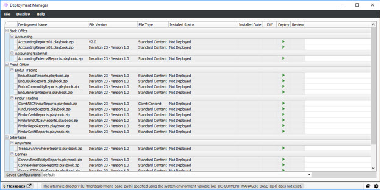

The Deployment Manager is an application that sits on top of the Deployment Wizard functionality and shows you an overall view of available and currently loaded deployments. It also allows for the manual deployment of packages with the appropriate security privilege and the ability to review the logs of already deployed packages.
Note: There are multiple ways to access this window; however, only one way is defined because some features can only be accessed via this procedure.
1. From OpenLink Central, right-click anywhere on the header and select Launch Available Services. The Launch Available Services window displays.
2. Type Deployment Manager in the Filter Service field, select Deployment Manager in the Available Services panel, and then click Launch. The following window displays:

This window contains the following menu items:
Menu |
Item |
Description |
Display |
Refresh Deployments |
If a client decides to add or remove one or more deployable package[s] to the system while the Deployment Manager panel is open, this menu item will allow the panel to re-interrogate the file system and database looking for these updates. . |
Hide Invalid Packages |
This menu item is ticked by default and will hide any deployment that are not suitable or valid for the client. |
|
Hide Client Content Packages |
This menu item is unticked by default, if it is ticked then any packages that are marked as Client Content under the column ‘File Type’ will be hidden. |
|
| Hide Standard Content Packages | This menu item is unticked by default, if it is ticked then any packages that are marked as Standard Content under the column ‘File Type’ will be hidden. |
|
| Hide Successfully Deployed Packages | This menu item is unticked by default, if it is ticked then any package that has been deployed and that does not have an available update will be hidden. |
|
Help |
Deployment Manager |
This menu item will allow you to display the on-line Deployment Manager documentation. |
|
About |
Opens the About window. |